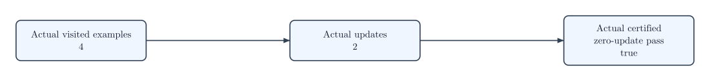
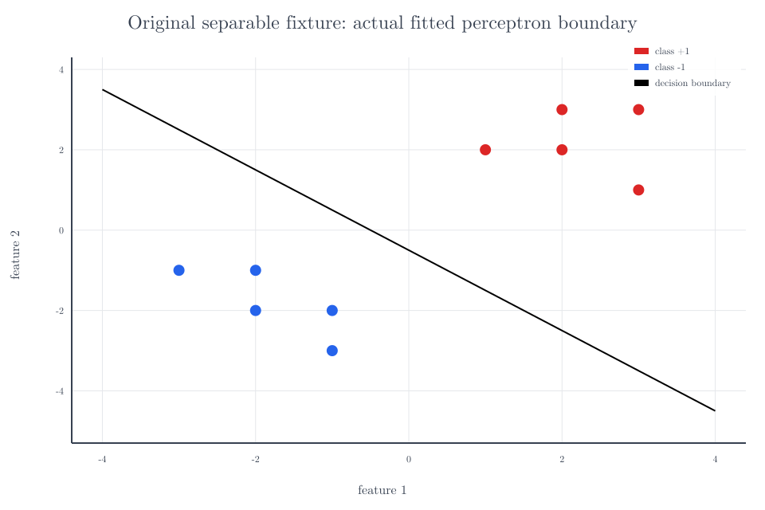
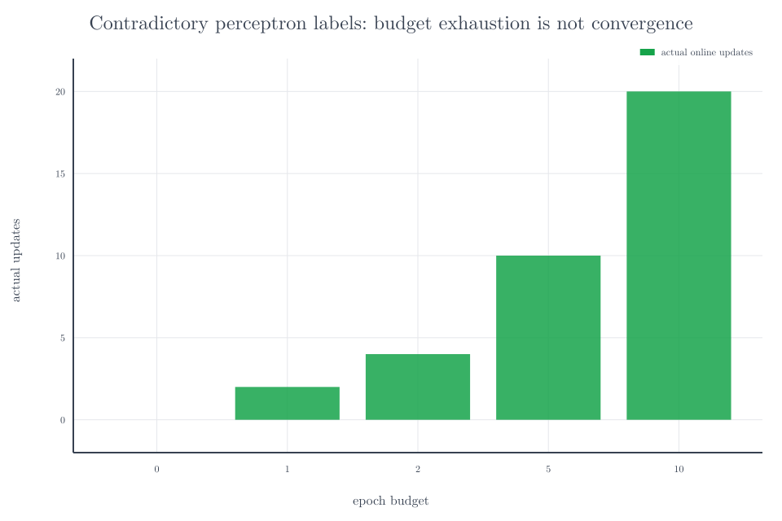
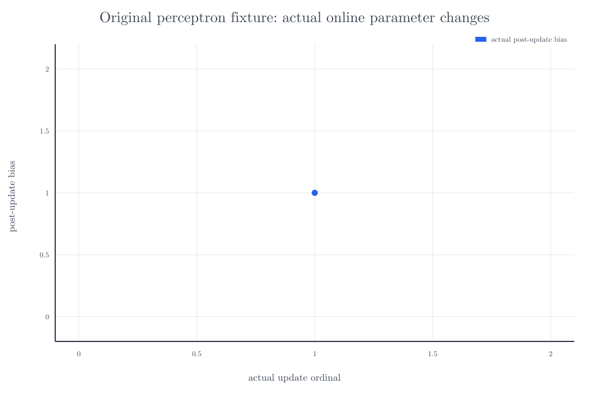

Perceptron: actual margin-driven updates
Abstract
The producer starts weights and bias at zero and visits rows in supplied order. A nonpositive signed margin triggers the additive weight and bias update. Only an actual complete zero-update pass certifies convergence. A finite epoch budget returns last weights for nonseparable data. Since the bias is trained, the classical radius/margin bound concerns augmented vectors(x,1), and is neither a finite-precision nor a held-out generalisation guarantee. The original two-dimensional separable fixture isolates updates; contradictory controls expose the cap.
Mechanism and scope
The producer starts weights and bias at zero and visits rows in supplied order. A nonpositive signed margin triggers the additive weight and bias update. Only an actual complete zero-update pass certifies convergence. A finite epoch budget returns last weights for nonseparable data. Since the bias is trained, the classical radius/margin bound concerns augmented vectors(x,1), and is neither a finite-precision nor a held-out generalisation guarantee. The original two-dimensional separable fixture isolates updates; contradictory controls expose the cap.
A tiny actual producing history
The table and native diagram use the same producing run. Captured records own their values; the report does not reconstruct the algorithm.
#include <dm/dm.hpp>
int main() {
std::filesystem::create_directories("build");
auto t = dm::algorithms::perceptron_trace({{1}, {-1}}, {1, -1}, 5);
std::print("| epoch | row | actual pre-score | update | actual post-weights | post-bias |\n| ---: | " "---: | ---: | --- | --- | ---: |\n");
for (auto &r : t.visits)
std::print("| {} | {} | {} | {} | `{}` | {} |\n", r.epoch, r.row,
r.score, r.updated, r.weights, r.bias);
dm::graphics::Diagram d;
d.node("n0", {0, 0},
std::format("Actual visited examples\n{}", t.visits.size()));
d.node("n1", {8, 0},
std::format("Actual updates\n{}", t.model.total_mistakes));
d.node("n2", {16, 0},
std::format("Actual certified zero-update pass\n{}",
t.model.converged));
d.edge("n0", "n1").edge("n1", "n2");
d.save_svg("build/perceptron_tiny.svg");
}| epoch | row | actual pre-score | update | actual post-weights | post-bias |
|---|---|---|---|---|---|
| 1 | 0 | 0 | true | [1] | 1 |
| 1 | 1 | 0 | true | [2] | 0 |
| 2 | 0 | 2 | false | [2] | 0 |
| 2 | 1 | -2 | false | [2] | 0 |

The original fixture, retained
This complete program retains the original inputs, seed and substantive experiment. Any added display prefix is explicitly separate from the original random call schedule.
#include <dm/dm.hpp>
using namespace datamunge::algorithms;
using namespace datamunge::graphics;
int main() {
std::ostringstream original_output;
auto *original_cout = std::cout.rdbuf(original_output.rdbuf());
std::filesystem::create_directories("build");
std::vector<std::vector<double>> X = {{2, 2}, {3, 1}, {2, 3}, {1, 2},
{3, 3}, {-2, -1}, {-1, -2}, {-3, -1},
{-1, -3}, {-2, -2}};
std::vector<int> y = {1, 1, 1, 1, 1, -1, -1, -1, -1, -1};
PerceptronModel model = perceptron_train(X, y, 100, 1.0);
std::cout << "=== Perceptron on a 2D separable set ===\n";
std::cout << "converged: " << (model.converged ? "yes" : "no") <<
" after " << model.epochs_run << " epochs\n";
std::cout << "total mistakes (updates): " << model.total_mistakes << '\n';
std::cout << "learned w = (" << model.weights[0] << ", " <<
model.weights[1] << "), b = " << model.bias << "\n\n";
std::cout << "predictions vs labels:\n";
std::size_t correct = 0;
for (std::size_t i = 0; i < X.size(); ++i) {
int p = perceptron_predict(model, X[i]);
correct += (p == y[i]);
std::cout << " (" << X[i][0] << ", " << X[i][1] << ") pred " <<
(p > 0 ? "+1" : "-1") << " true " << (y[i] > 0 ? "+1" : "-1") <<
'\n';
}
std::cout << "training accuracy: " << correct << "/" << X.size() << '\n';
// Figure: points colored by class + the learned decision boundary w0*x + w1*y + b = 0.
std::vector<double> px_pos, py_pos, px_neg, py_neg;
for (std::size_t i = 0; i < X.size(); ++i) {
(y[i] > 0 ? px_pos : px_neg).push_back(X[i][0]);
(y[i] > 0 ? py_pos : py_neg).push_back(X[i][1]);
}
RPlot p = RPlot::create();
p.points(px_pos, py_pos, "class +1", {220, 38, 38}, 7.0);
p.points(px_neg, py_neg, "class -1", {37, 99, 235}, 7.0);
// Boundary line across the plotted x-range.
std::vector<double> bx, by;
for (double xv = -4.0; xv <= 4.0; xv += 0.5) {
bx.push_back(xv);
by.push_back(-(model.weights[0] * xv + model.bias) / model.weights[1]);
}
p.lines(bx, by, "decision boundary", {0, 0, 0}, 2.0);
p.legend({"class +1", "class -1", "decision boundary"},
{{220, 38, 38}, {37, 99, 235}, {0, 0, 0}});
p.title("Original separable fixture: actual fitted perceptron boundary").x_label("feature 1").y_label("feature 2");
p.save_svg("build/perceptron_original.svg");
std::cout << "\nwrote build/perceptron_original.svg\n";
std::cout.rdbuf(original_cout);
std::print("| Original computed output |\n| --- |\n");
std::istringstream lines(original_output.str());
std::string line;
while (std::getline(lines, line)) {
while (!line.empty() && line.back() == ' ') line.pop_back();
if (!line.empty()) std::print("| `{}` |\n", line);
}
return 0;
}| Original computed output |
|---|
=== Perceptron on a 2D separable set === |
converged: yes after 2 epochs |
total mistakes (updates): 1 |
learned w = (2, 2), b = 1 |
predictions vs labels: |
(2, 2) pred +1 true +1 |
(3, 1) pred +1 true +1 |
(2, 3) pred +1 true +1 |
(1, 2) pred +1 true +1 |
(3, 3) pred +1 true +1 |
(-2, -1) pred -1 true -1 |
(-1, -2) pred -1 true -1 |
(-3, -1) pred -1 true -1 |
(-1, -3) pred -1 true -1 |
(-2, -2) pred -1 true -1 |
training accuracy: 10/10 |
wrote build/perceptron_original.svg |

Controls and boundary cases
#include <dm/dm.hpp>
int main() {
std::filesystem::create_directories("build");
std::vector<double> v;
std::vector<std::string> labels;
std::print("| epoch budget | actual completed passes | updates | converged |\n| ---: | ---: | ---: | " "--- |\n");
for (std::size_t cap : {0, 1, 2, 5, 10}) {
auto m = dm::algorithms::perceptron_train({{1}, {1}}, {1, -1}, cap);
labels.push_back(std::to_string(cap));
v.push_back(m.total_mistakes);
std::print("| {} | {} | {} | {} |\n", cap, m.epochs_run,
m.total_mistakes, m.converged);
}
auto p = dm::graphics::RPlot::barplot(v, labels, "actual online updates");
p.title("Contradictory perceptron labels: budget exhaustion is not convergence").x_label("epoch budget").y_label("actual updates");
p.save_svg("build/perceptron_controls.svg");
}| epoch budget | actual completed passes | updates | converged |
|---|---|---|---|
| 0 | 0 | 0 | false |
| 1 | 1 | 2 | false |
| 2 | 2 | 4 | false |
| 5 | 5 | 10 | false |
| 10 | 10 | 20 | false |

Producing work and finite observations
#include <dm/dm.hpp>
int main() {
std::filesystem::create_directories("build");
auto t =
dm::algorithms::perceptron_trace({{2, 2}, {3, 1}, {2, 3}, {1, 2},
{3, 3}, {-2, -1}, {-1, -2}, {-3, -1},
{-1, -3}, {-2, -2}},
{1, 1, 1, 1, 1, -1, -1, -1, -1, -1},
100);
std::vector<double> x, y;
std::print("| actual update ordinal | actual post-bias | actual post-weights |\n| ---: | ---: | --- " "|\n");
for (auto &r : t.visits)
if (r.updated) {
x.push_back(x.size() + 1);
y.push_back(r.bias);
std::print("| {} | {} | `{}` |\n", x.size(), r.bias, r.weights);
}
auto p = dm::graphics::RPlot::create();
p.points(x, y, "actual post-update bias", {37, 99, 235}, 5).title(
"Original perceptron fixture: actual online parameter changes").x_label("actual update ordinal").y_label("post-update bias");
p.save_svg("build/perceptron_work.svg");
}| actual update ordinal | actual post-bias | actual post-weights |
|---|---|---|
| 1 | 1 | [2, 2] |

API and interpretation
All four blocks are complete editable C++ programs. Numerical tables retain raw native values; figures display only those returned records. Trace limits count documented logical records or scalar entries, not peak bytes or wall-clock work. Validation is complete before unchecked indexing; captured histories are educational owned storage. A returned result is interpreted under the algorithm-specific scope above, without a universal optimality, convergence or statistical-quality claim.
Rosenblatt introduces the perceptron. The native finite ordered fit and bias convention are explicit above.
Verification
This ten-report batch passes 89 CTest cases, 20 ASan/UBSan cases with all ten
producing families directly instrumented, 62 compiled and executed public
examples, 200/200 scoped file definitions plus 15/15 exact PCG class
definitions, and ten representative clangd hovers. Independent Python
hashlib/HMAC and arbitrary-integer PCG checks verify 75189 records with 123243
checks. Native independent per-pixel visibility, exhaustive prefix reversals,
quadratic LIS, integer perceptron updates, sampled-label tail counts and
exhaustive Boolean-cover checks supplement frozen valid-input comparisons for
all ten producers. Ten checkout and ten byte-identical installed development
headers compile independently; an installed-header native consumer links and
runs. All 40 complete programs execute; all 40 native figures have been visually
reviewed. HTML/Markdown exports preserve computed result rows and identical
image bytes. These are scoped native checks. Receipts:
build/mepml-conversion/batch-274-283/.